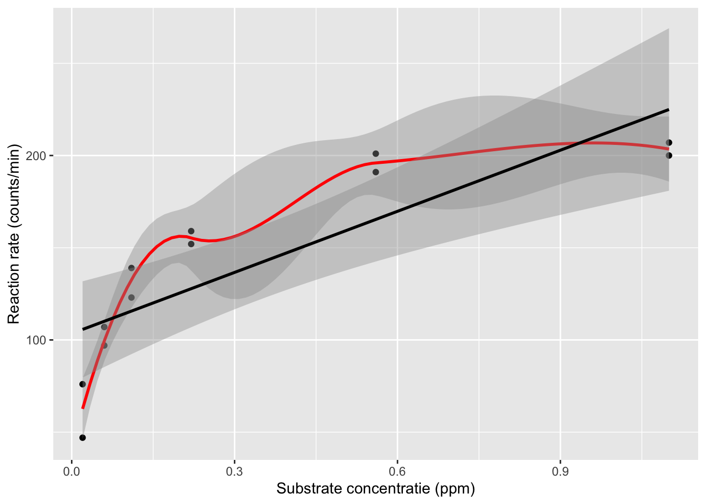
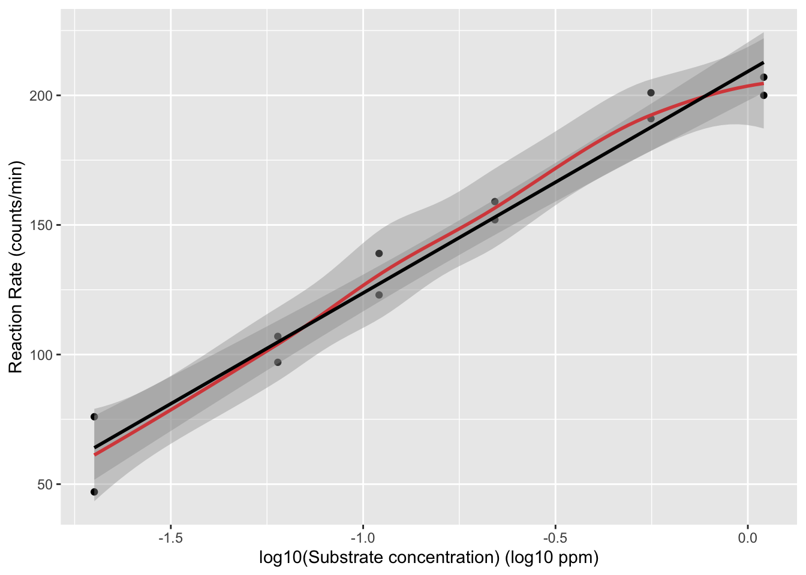
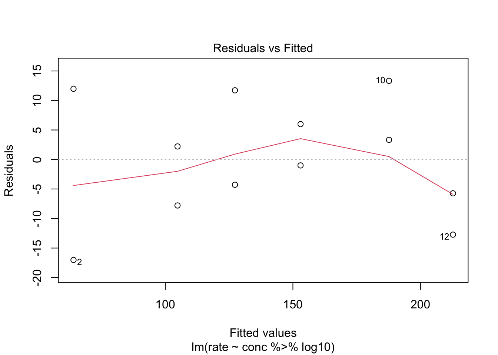
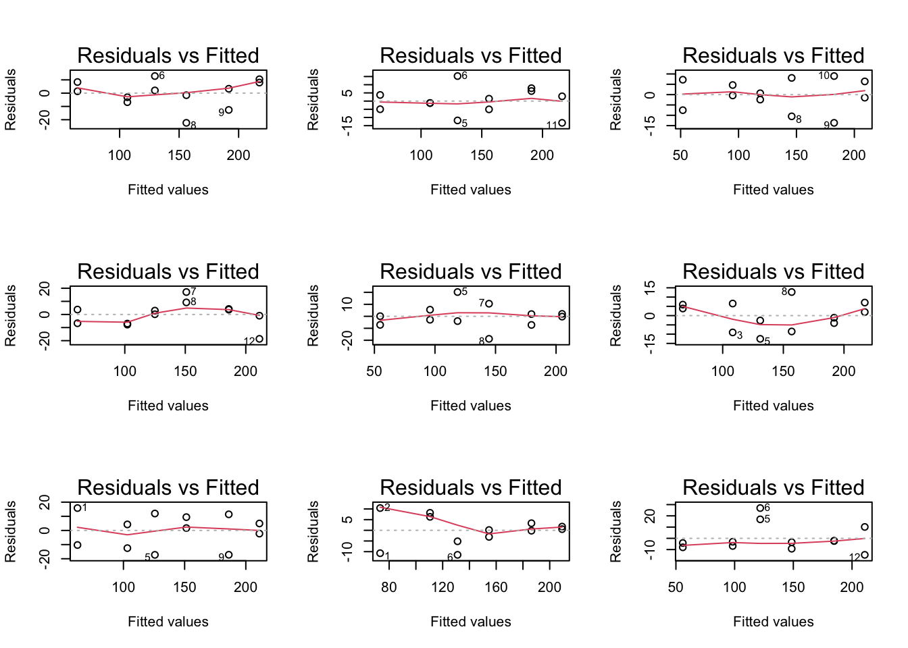
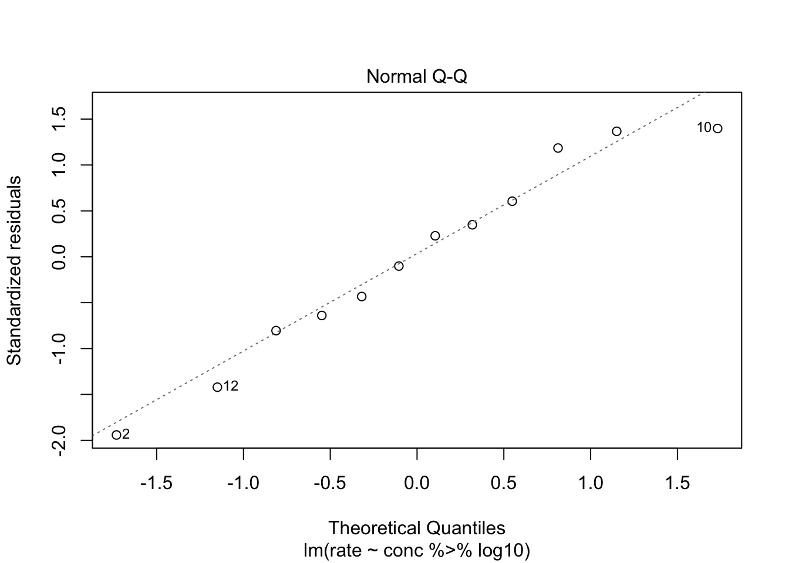
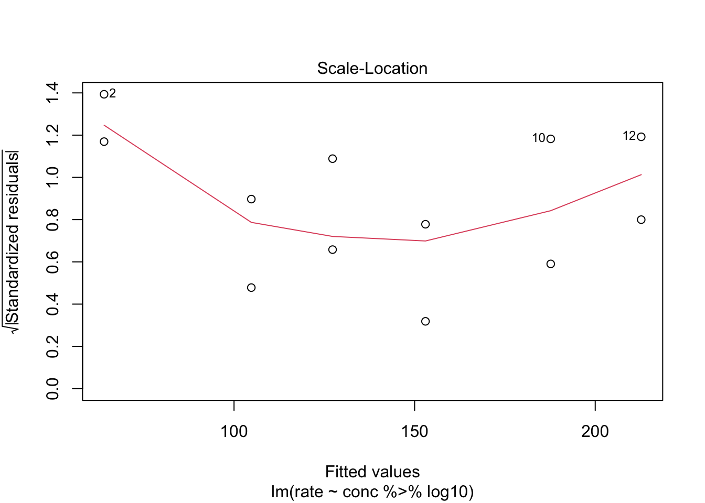
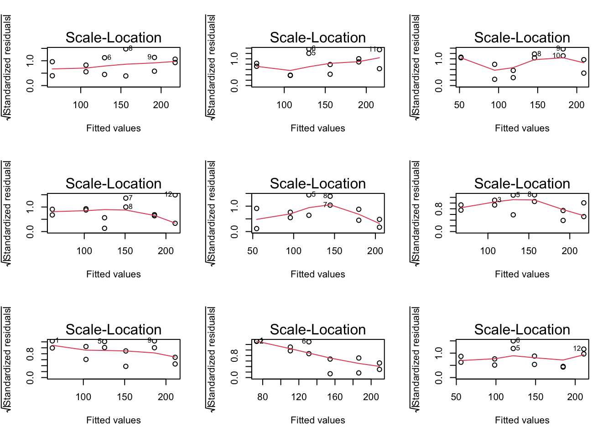

Puromycin data
Data on the velocity of an enzymatic reaction were obtained by Treloar (1974).
The number of counts per minute of radioactive product from the reaction was measured as a function of substrate concentration in parts per million (ppm) and from these counts the initial rate (or velocity) of the reaction was calculated (counts/min/min). The experiment was conducted once with the enzyme treated with Puromycin, and once with the enzyme untreated.
Assess if there is an association between the substrate concentration and rate for the treated enzyme.
data(Puromycin)
Puromycin <- Puromycin %>%
filter(state=="treated")
Data Exploration
Puromycin %>%
ggplot(aes(x=conc,y=rate)) +
geom_point() +
stat_smooth(method = "loess",col="red") + # fit een kromme door de punten (rode lijn)
stat_smooth(method='lm',col="black") + # fit een rechte door de punten aan de hand van de kleinstekwadratenmethode
ylab("Reaction rate (counts/min)") +
xlab("Substrate concentratie (ppm)")
## `geom_smooth()` using formula 'y ~ x'
## `geom_smooth()` using formula 'y ~ x'

The plot shows that there is a relation between the velocity and the concentration, however, the relation does not seem to be linear.
We will assess the impact of log-transforming the concentration. Because the concentration is measured in ppm we will log\(_{10}\) transform the data.
Puromycin %>%
ggplot(aes(x=conc %>% log10,y=rate)) +
geom_point() +
stat_smooth(method = "loess",col="red") +
stat_smooth(method='lm',col="black") +
ylab("Reaction Rate (counts/min)") +
xlab("log10(Substrate concentration) (log10 ppm)")
## `geom_smooth()` using formula 'y ~ x'
## `geom_smooth()` using formula 'y ~ x'

The relation between the velocity and the log\(_{10}\) transformed concentration seems to be linear.
Linear regression
We will fit the following model to the data
\(Y_i = \beta_0 + \beta_1 log_{10}(x_i) + \epsilon_i\)
with \(Y_i\) the reaction rate, \(x_i\) the adopted concentration, \(\beta_0\) the intercept, \(\beta_1\) the slope or the effect of the log\(_{10}\)(concentratie) on the average reaction rate, and \(\epsilon_i\) the error term that is \(\epsilon_i\) i.i.d. normally distributed with mean 0 and variance \(\sigma^2\).
Note, that we write the substrate concentratio with a small letter because the predictor is not random. The researchers have chosen the substrate concentrations in the design phase and it is thus no random variable.
mod1 <- lm(rate ~ conc %>% log10, Puromycin)
summary(mod1)
##
## Call:
## lm(formula = rate ~ conc %>% log10, data = Puromycin)
##
## Residuals:
## Min 1Q Median 3Q Max
## -17.0176 -6.2455 0.6039 7.4262 13.3228
##
## Coefficients:
## Estimate Std. Error t value Pr(>|t|)
## (Intercept) 209.194 5.045 41.47 1.59e-12 ***
## conc %>% log10 85.450 5.133 16.65 1.28e-08 ***
## ---
## Signif. codes: 0 '***' 0.001 '**' 0.01 '*' 0.05 '.' 0.1 ' ' 1
##
## Residual standard error: 10.37 on 10 degrees of freedom
## Multiple R-squared: 0.9652, Adjusted R-squared: 0.9617
## F-statistic: 277.1 on 1 and 10 DF, p-value: 1.28e-08
Before we perform inference we will first assess the assumptions
Assumptions
- Independence
- Linearity
- Normal distribution of the residuals
- Homoscedasticity
We assume that the experiment was well designed and that the different reactions that were use in the experiment are independent.
Linearity
We assess linearity in a residual analysis

There seem to be small deviations for the residuals at high concentrations. However, we do not have many observation in the study so this might be caused by random varibility.
We will use simulation to assess if we can observe similar residual plots if all assumptions for the linear model hold.
set.seed(1031)
sigma <- mod1 %>% sigma
dataHlp <- Puromycin
simModels <- list()
par(mfrow=c(3,3))
for (i in 1:9)
{
nobs <- Puromycin %>% nrow
dataHlp$ySim <- mod1$fit + rnorm(nobs, sd = sigma)
simModels[[i]] <- lm(ySim~conc %>% log10, dataHlp)
plot(simModels[[i]], which = 1)
}

We observe that similar deviations might be generated for a model where all assumptions are valid.
Normality

The QQ-plot does not show large deviations from normality.
Homoscedasticity: equality of the variance
We can again use the residual plot for assessing this assumption or the plot were we plot the square root of the standardized residuals in function of the fit.

We see that the spread of the majority of the residuals is more or less similar. However, the two residuals at low concentrations are slightly higher. Again we can use our simulations to show that similar deviations might occur for models where all assumptions hold.
par(mfrow = c(3,3))
for (i in 1:9)
plot(simModels[[i]], which = 3)

Inference
hypotheses
We want to assess if there is a linear association between the reaction rate and the log\(_{10}\) transformed concentration.
So we will assess
\(H_0\): \(\beta_1 = 0\)
against
\(H_A\): \(\beta_1 \ne 0\)
using a t-test on the slope parameter.
##
## Call:
## lm(formula = rate ~ conc %>% log10, data = Puromycin)
##
## Residuals:
## Min 1Q Median 3Q Max
## -17.0176 -6.2455 0.6039 7.4262 13.3228
##
## Coefficients:
## Estimate Std. Error t value Pr(>|t|)
## (Intercept) 209.194 5.045 41.47 1.59e-12 ***
## conc %>% log10 85.450 5.133 16.65 1.28e-08 ***
## ---
## Signif. codes: 0 '***' 0.001 '**' 0.01 '*' 0.05 '.' 0.1 ' ' 1
##
## Residual standard error: 10.37 on 10 degrees of freedom
## Multiple R-squared: 0.9652, Adjusted R-squared: 0.9617
## F-statistic: 277.1 on 1 and 10 DF, p-value: 1.28e-08
## 2.5 % 97.5 %
## (Intercept) 197.95335 220.43564
## conc %>% log10 74.01255 96.88732
Conclusion
There is an extremely significant linear association between the substrate concentration on the log-scale and the reaction rate (p<<0.001). A reaction at a substrate concentration that is 10 times higher will have a reaction speed that is on average 85.4 counts/min higher (95% CI [74, 96.9] counts/min).
LS0tCnRpdGxlOiAiRXhlcmNpc2UgNi4xOiBMaW5lYXIgcmVncmVzc2lvbiBvbiBwdXJvbXljaW4gZGF0YSIKYXV0aG9yOiAiTGlldmVuIENsZW1lbnQgJiBBbGV4YW5kcmUgU2VnZXJzIgpkYXRlOiAic3RhdE9taWNzLCBHaGVudCBVbml2ZXJzaXR5IChodHRwczovL3N0YXRvbWljcy5naXRodWIuaW8pIgpvdXRwdXQ6CiAgaHRtbF9kb2N1bWVudDoKICAgIGNvZGVfZG93bmxvYWQ6IHllcwogICAgdGhlbWU6IGNvc21vCiAgICB0b2M6IHllcwogICAgdG9jX2Zsb2F0OiB5ZXMKICAgIGhpZ2hsaWdodDogdGFuZ28KICAgIG51bWJlcl9zZWN0aW9uczogeWVzCi0tLQoKCjxhIHJlbD0ibGljZW5zZSIgaHJlZj0iaHR0cHM6Ly9jcmVhdGl2ZWNvbW1vbnMub3JnL2xpY2Vuc2VzL2J5LW5jLXNhLzQuMCI+PGltZyBhbHQ9IkNyZWF0aXZlIENvbW1vbnMgTGljZW5zZSIgc3R5bGU9ImJvcmRlci13aWR0aDowIiBzcmM9Imh0dHBzOi8vaS5jcmVhdGl2ZWNvbW1vbnMub3JnL2wvYnktbmMtc2EvNC4wLzg4eDMxLnBuZyIgLz48L2E+CgpgYGB7ciwgbWVzc2FnZT1GQUxTRSwgd2FybmluZz1GQUxTRX0KbGlicmFyeSh0aWR5dmVyc2UpCmBgYAoKIyBQdXJvbXljaW4gZGF0YQoKRGF0YSBvbiB0aGUgdmVsb2NpdHkgb2YgYW4gZW56eW1hdGljIHJlYWN0aW9uIHdlcmUgb2J0YWluZWQgYnkgVHJlbG9hciAoMTk3NCkuICAKVGhlIG51bWJlciBvZiBjb3VudHMgcGVyIG1pbnV0ZSBvZiByYWRpb2FjdGl2ZSBwcm9kdWN0IGZyb20gdGhlIHJlYWN0aW9uIHdhcyBtZWFzdXJlZCBhcyBhIGZ1bmN0aW9uIG9mIHN1YnN0cmF0ZSBjb25jZW50cmF0aW9uIGluIHBhcnRzIHBlciBtaWxsaW9uIChwcG0pIGFuZCBmcm9tIHRoZXNlIGNvdW50cyB0aGUgaW5pdGlhbCByYXRlIChvciB2ZWxvY2l0eSkgb2YgdGhlIHJlYWN0aW9uIHdhcyBjYWxjdWxhdGVkIChjb3VudHMvbWluL21pbikuICBUaGUgZXhwZXJpbWVudCB3YXMgY29uZHVjdGVkIG9uY2Ugd2l0aCB0aGUgZW56eW1lIHRyZWF0ZWQgd2l0aCBQdXJvbXljaW4sIGFuZCBvbmNlIHdpdGggdGhlIGVuenltZSB1bnRyZWF0ZWQuCgpBc3Nlc3MgaWYgdGhlcmUgaXMgYW4gYXNzb2NpYXRpb24gYmV0d2VlbiB0aGUgc3Vic3RyYXRlIGNvbmNlbnRyYXRpb24gYW5kIHJhdGUgZm9yIHRoZSB0cmVhdGVkIGVuenltZS4gCgoKYGBge3J9CmRhdGEoUHVyb215Y2luKQpQdXJvbXljaW4gPC0gUHVyb215Y2luICU+JSAKICBmaWx0ZXIoc3RhdGU9PSJ0cmVhdGVkIikKYGBgCgojIyBEYXRhIEV4cGxvcmF0aW9uCgpgYGB7cn0KUHVyb215Y2luICAlPiUKICBnZ3Bsb3QoYWVzKHg9Y29uYyx5PXJhdGUpKSArCiAgZ2VvbV9wb2ludCgpICsgCiAgc3RhdF9zbW9vdGgobWV0aG9kID0gImxvZXNzIixjb2w9InJlZCIpICsgIyBmaXQgZWVuIGtyb21tZSBkb29yIGRlIHB1bnRlbiAocm9kZSBsaWpuKQogIHN0YXRfc21vb3RoKG1ldGhvZD0nbG0nLGNvbD0iYmxhY2siKSArICMgZml0IGVlbiByZWNodGUgZG9vciBkZSBwdW50ZW4gYWFuIGRlIGhhbmQgdmFuIGRlIGtsZWluc3Rla3dhZHJhdGVubWV0aG9kZQogIHlsYWIoIlJlYWN0aW9uIHJhdGUgKGNvdW50cy9taW4pIikgKwogIHhsYWIoIlN1YnN0cmF0ZSBjb25jZW50cmF0aWUgKHBwbSkiKQpgYGAKClRoZSBwbG90IHNob3dzIHRoYXQgdGhlcmUgaXMgYSByZWxhdGlvbiBiZXR3ZWVuIHRoZSB2ZWxvY2l0eSBhbmQgdGhlIGNvbmNlbnRyYXRpb24sIGhvd2V2ZXIsIHRoZSByZWxhdGlvbiBkb2VzIG5vdCBzZWVtIHRvIGJlIGxpbmVhci4gCgpXZSB3aWxsIGFzc2VzcyB0aGUgaW1wYWN0IG9mIGxvZy10cmFuc2Zvcm1pbmcgdGhlIGNvbmNlbnRyYXRpb24uIEJlY2F1c2UgdGhlIGNvbmNlbnRyYXRpb24gaXMgbWVhc3VyZWQgaW4gcHBtIHdlIHdpbGwgbG9nJF97MTB9JCB0cmFuc2Zvcm0gdGhlIGRhdGEuIAoKYGBge3J9ClB1cm9teWNpbiAgJT4lCiAgZ2dwbG90KGFlcyh4PWNvbmMgJT4lIGxvZzEwLHk9cmF0ZSkpICsKICBnZW9tX3BvaW50KCkgKyAKICBzdGF0X3Ntb290aChtZXRob2QgPSAibG9lc3MiLGNvbD0icmVkIikgKyAKICBzdGF0X3Ntb290aChtZXRob2Q9J2xtJyxjb2w9ImJsYWNrIikgKwogIHlsYWIoIlJlYWN0aW9uIFJhdGUgKGNvdW50cy9taW4pIikgKwogIHhsYWIoImxvZzEwKFN1YnN0cmF0ZSBjb25jZW50cmF0aW9uKSAobG9nMTAgcHBtKSIpCmBgYAoKVGhlIHJlbGF0aW9uIGJldHdlZW4gdGhlIHZlbG9jaXR5IGFuZCB0aGUgbG9nJF97MTB9JCB0cmFuc2Zvcm1lZCBjb25jZW50cmF0aW9uIHNlZW1zIHRvIGJlIGxpbmVhci4gCgojIExpbmVhciByZWdyZXNzaW9uIAoKV2Ugd2lsbCBmaXQgdGhlIGZvbGxvd2luZyBtb2RlbCB0byB0aGUgZGF0YSAKCiRZX2kgPSBcYmV0YV8wICsgXGJldGFfMSBsb2dfezEwfSh4X2kpICsgXGVwc2lsb25faSQKCndpdGggJFlfaSQgdGhlIHJlYWN0aW9uIHJhdGUsICR4X2kkIHRoZSBhZG9wdGVkIGNvbmNlbnRyYXRpb24sICRcYmV0YV8wJCB0aGUgKippbnRlcmNlcHQqKiwgJFxiZXRhXzEkIHRoZSBzbG9wZSBvciB0aGUgKiplZmZlY3Qgb2YgdGhlIGxvZyRfezEwfSQoY29uY2VudHJhdGllKSBvbiB0aGUgYXZlcmFnZSAgcmVhY3Rpb24gcmF0ZSoqLCBhbmQgJFxlcHNpbG9uX2kkIHRoZSBlcnJvciB0ZXJtIHRoYXQgaXMgJFxlcHNpbG9uX2kkIGkuaS5kLiBub3JtYWxseSBkaXN0cmlidXRlZCB3aXRoIG1lYW4gMCBhbmQgdmFyaWFuY2UgJFxzaWdtYV4yJC4KCk5vdGUsIHRoYXQgd2Ugd3JpdGUgdGhlIHN1YnN0cmF0ZSBjb25jZW50cmF0aW8gd2l0aCBhIHNtYWxsIGxldHRlciBiZWNhdXNlIHRoZSBwcmVkaWN0b3IgaXMgbm90IHJhbmRvbS4gVGhlIHJlc2VhcmNoZXJzIGhhdmUgY2hvc2VuIHRoZSBzdWJzdHJhdGUgY29uY2VudHJhdGlvbnMgaW4gdGhlIGRlc2lnbiBwaGFzZSBhbmQgaXQgaXMgdGh1cyBubyByYW5kb20gdmFyaWFibGUuCgpgYGB7cn0KbW9kMSA8LSBsbShyYXRlIH4gY29uYyAlPiUgbG9nMTAsIFB1cm9teWNpbikKc3VtbWFyeShtb2QxKQpgYGAKCkJlZm9yZSB3ZSBwZXJmb3JtIGluZmVyZW5jZSB3ZSB3aWxsIGZpcnN0IGFzc2VzcyB0aGUgYXNzdW1wdGlvbnMKCiMjIEFzc3VtcHRpb25zIAoKMS4gSW5kZXBlbmRlbmNlIAoyLiBMaW5lYXJpdHkKMy4gTm9ybWFsIGRpc3RyaWJ1dGlvbiBvZiB0aGUgcmVzaWR1YWxzCjQuIEhvbW9zY2VkYXN0aWNpdHkgCgpXZSBhc3N1bWUgdGhhdCB0aGUgZXhwZXJpbWVudCB3YXMgd2VsbCBkZXNpZ25lZCBhbmQgdGhhdCB0aGUgZGlmZmVyZW50IHJlYWN0aW9ucyB0aGF0IHdlcmUgdXNlIGluIHRoZSBleHBlcmltZW50IGFyZSBpbmRlcGVuZGVudC4KCiMjIExpbmVhcml0eSAKCldlIGFzc2VzcyBsaW5lYXJpdHkgaW4gYSByZXNpZHVhbCBhbmFseXNpcyAKCmBgYHtyfQpwbG90KG1vZDEsIHdoaWNoPTEpCmBgYAoKVGhlcmUgc2VlbSB0byBiZSBzbWFsbCBkZXZpYXRpb25zIGZvciB0aGUgcmVzaWR1YWxzIGF0IGhpZ2ggY29uY2VudHJhdGlvbnMuIApIb3dldmVyLCB3ZSBkbyBub3QgaGF2ZSBtYW55IG9ic2VydmF0aW9uIGluIHRoZSBzdHVkeSBzbyB0aGlzIG1pZ2h0IGJlIGNhdXNlZCBieSByYW5kb20gdmFyaWJpbGl0eS4KCldlIHdpbGwgdXNlIHNpbXVsYXRpb24gdG8gYXNzZXNzIGlmIHdlIGNhbiBvYnNlcnZlIHNpbWlsYXIgcmVzaWR1YWwgcGxvdHMgaWYgYWxsIGFzc3VtcHRpb25zIGZvciB0aGUgbGluZWFyIG1vZGVsIGhvbGQuCgpgYGB7cn0Kc2V0LnNlZWQoMTAzMSkKc2lnbWEgPC0gbW9kMSAlPiUgc2lnbWEgCmRhdGFIbHAgPC0gUHVyb215Y2luCgpzaW1Nb2RlbHMgPC0gbGlzdCgpCgpwYXIobWZyb3c9YygzLDMpKQpmb3IgKGkgaW4gMTo5KQp7CiAgbm9icyA8LSBQdXJvbXljaW4gJT4lIG5yb3cKICBkYXRhSGxwJHlTaW0gPC0gbW9kMSRmaXQgKyBybm9ybShub2JzLCBzZCA9IHNpZ21hKQogIHNpbU1vZGVsc1tbaV1dIDwtIGxtKHlTaW1+Y29uYyAlPiUgbG9nMTAsIGRhdGFIbHApCiAgcGxvdChzaW1Nb2RlbHNbW2ldXSwgd2hpY2ggPSAxKQp9CmBgYAoKV2Ugb2JzZXJ2ZSB0aGF0IHNpbWlsYXIgZGV2aWF0aW9ucyBtaWdodCBiZSBnZW5lcmF0ZWQgZm9yIGEgbW9kZWwgd2hlcmUgYWxsIGFzc3VtcHRpb25zIGFyZSB2YWxpZC4gCgojIyMgTm9ybWFsaXR5IAoKCmBgYHtyfQpwbG90KG1vZDEsd2hpY2g9MikKYGBgCgpUaGUgUVEtcGxvdCBkb2VzIG5vdCBzaG93IGxhcmdlIGRldmlhdGlvbnMgZnJvbSBub3JtYWxpdHkuIAoKIyMjIEhvbW9zY2VkYXN0aWNpdHk6IGVxdWFsaXR5IG9mIHRoZSB2YXJpYW5jZQoKV2UgY2FuIGFnYWluIHVzZSB0aGUgcmVzaWR1YWwgcGxvdCBmb3IgYXNzZXNzaW5nIHRoaXMgYXNzdW1wdGlvbiBvciB0aGUgcGxvdCB3ZXJlIHdlIHBsb3QgdGhlIHNxdWFyZSByb290IG9mIHRoZSBzdGFuZGFyZGl6ZWQgcmVzaWR1YWxzIGluIGZ1bmN0aW9uIG9mIHRoZSBmaXQuIAoKYGBge3J9CnBsb3QobW9kMSwgd2hpY2g9MykKYGBgCgpXZSBzZWUgdGhhdCB0aGUgc3ByZWFkIG9mIHRoZSBtYWpvcml0eSBvZiB0aGUgcmVzaWR1YWxzIGlzIG1vcmUgb3IgbGVzcyBzaW1pbGFyLiBIb3dldmVyLCB0aGUgdHdvIHJlc2lkdWFscyBhdCBsb3cgY29uY2VudHJhdGlvbnMgYXJlIHNsaWdodGx5IGhpZ2hlci4gCkFnYWluIHdlIGNhbiB1c2Ugb3VyIHNpbXVsYXRpb25zIHRvIHNob3cgdGhhdCBzaW1pbGFyIGRldmlhdGlvbnMgbWlnaHQgb2NjdXIgZm9yIG1vZGVscyB3aGVyZSBhbGwgYXNzdW1wdGlvbnMgaG9sZC4gCgpgYGB7cn0KcGFyKG1mcm93ID0gYygzLDMpKQpmb3IgKGkgaW4gMTo5KQogIHBsb3Qoc2ltTW9kZWxzW1tpXV0sIHdoaWNoID0gMykKYGBgCgojIyBJbmZlcmVuY2UgCiMjIyBoeXBvdGhlc2VzIAoKV2Ugd2FudCB0byBhc3Nlc3MgaWYgdGhlcmUgaXMgYSBsaW5lYXIgYXNzb2NpYXRpb24gYmV0d2VlbiB0aGUgcmVhY3Rpb24gcmF0ZSBhbmQgdGhlIGxvZyRfezEwfSQgdHJhbnNmb3JtZWQgY29uY2VudHJhdGlvbi4gCgpTbyB3ZSB3aWxsIGFzc2VzcyAKCiRIXzAkOiAkXGJldGFfMSA9IDAkCiAKYWdhaW5zdAoKJEhfQSQ6ICRcYmV0YV8xIFxuZSAwJCAKCnVzaW5nIGEgdC10ZXN0IG9uIHRoZSBzbG9wZSBwYXJhbWV0ZXIuIAoKYGBge3J9CnN1bW1hcnkobW9kMSkKY29uZmludChtb2QxKQpgYGAKCgojIyMgQ29uY2x1c2lvbgoKVGhlcmUgaXMgYW4gZXh0cmVtZWx5IHNpZ25pZmljYW50IGxpbmVhciBhc3NvY2lhdGlvbiBiZXR3ZWVuIHRoZSBzdWJzdHJhdGUgY29uY2VudHJhdGlvbiBvbiB0aGUgbG9nLXNjYWxlIGFuZCB0aGUgcmVhY3Rpb24gcmF0ZSAocDw8MC4wMDEpLiAKQSByZWFjdGlvbiBhdCBhIHN1YnN0cmF0ZSBjb25jZW50cmF0aW9uIHRoYXQgaXMgMTAgdGltZXMgaGlnaGVyIHdpbGwgaGF2ZSBhIHJlYWN0aW9uIHNwZWVkIHRoYXQgaXMgb24gYXZlcmFnZSAgYHIgcm91bmQobW9kMSRjb2VmWzJdLDEpYCBjb3VudHMvbWluIGhpZ2hlciAoOTUlIENJIFtgciByb3VuZChjb25maW50KG1vZDEpWzIsXSwxKWBdIGNvdW50cy9taW4pLiAKCgoK